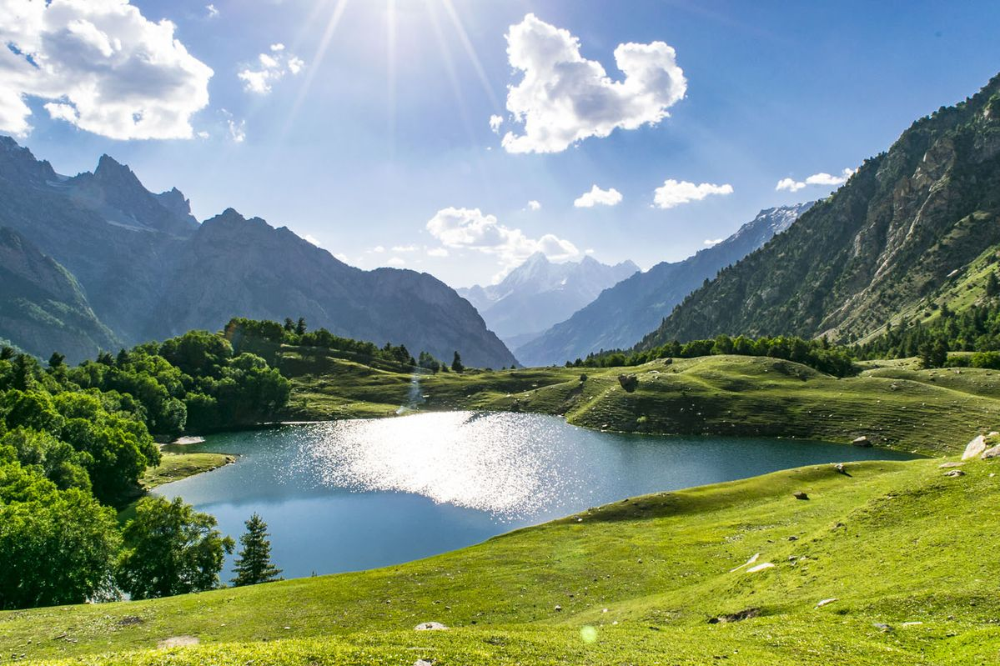
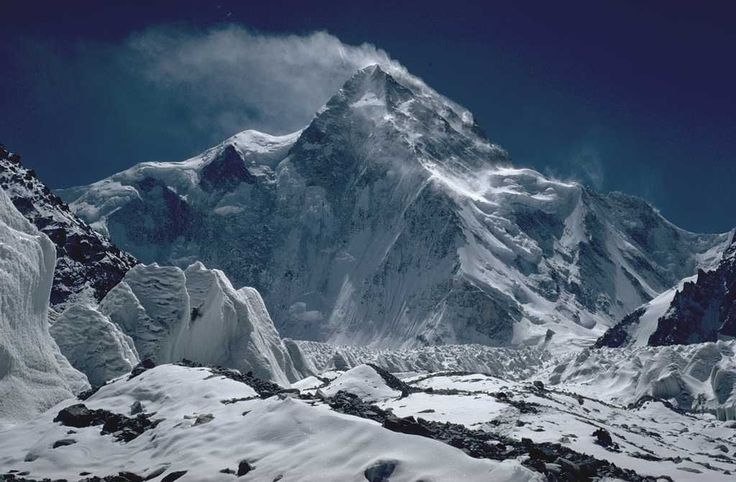
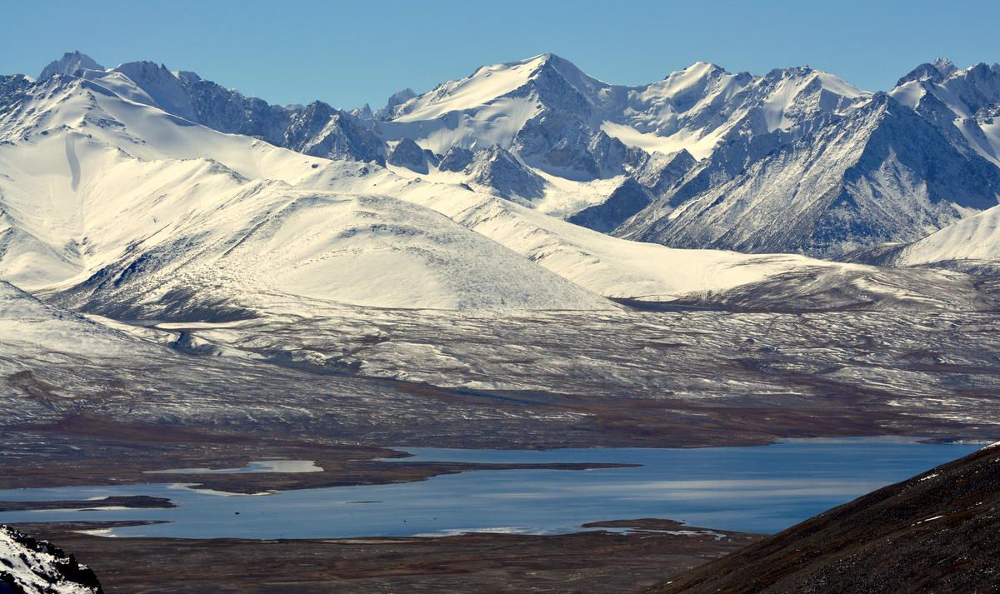

The Himalayas in Pakistan are part of the world’s highest mountain range, stretching across the northern regions of the country. This area is home to towering peaks, lush valleys, and pristine landscapes that attract trekkers, climbers, and nature enthusiasts alike. Notable destinations include Nanga Parbat, also known as the “Killer Mountain,” Fairy Meadows, and the scenic Hunza Valley, which offer spectacular views, hiking trails, and cultural experiences with local mountain communities.
These mountains are not only a paradise for adventure but also rich in biodiversity, featuring alpine forests, glacial rivers, and rare wildlife. Visitors can enjoy activities such as trekking, camping, and photography, while also experiencing the unique traditions, warm hospitality, and mountain culture of northern Pakistan. The Himalayas here provide a perfect combination of natural beauty and adventure, making them a highlight of Pakistan’s tourism.


The Karakoram is one of the world’s most spe...

The Hindu Kush is a large mountain range loc...